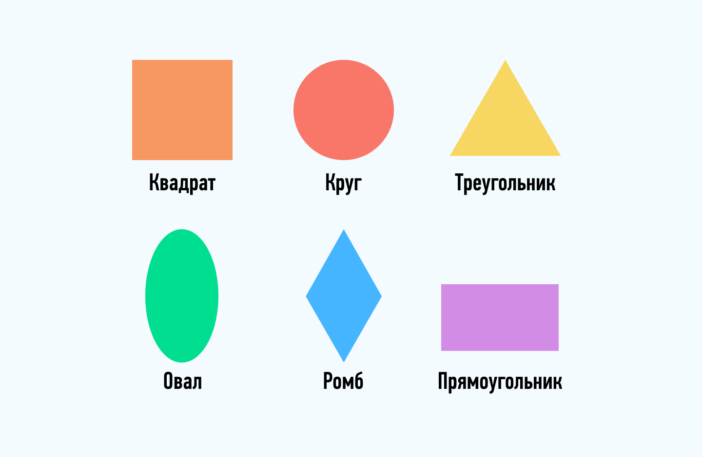

Фигуры на картинке кликабельны
С помощью тега area можно на изображении выделить отдельные области в качестве ссылок. Т.е. не вся картинка будет ссылкой, а только описанная область. В результате на одной картинке можно расположить несколько ссылок и сделать изображение более интерактивным. К примеру можно картинку использовать для навигации по сайту и т.п.